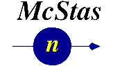

Main Page
From McXtraceWiki
Contents |
McXtrace
McXtrace - Monte Carlo Xray ray-tracing is a joint venture by

|
Funding from NABIIT, DSF and the above parties.
Our code is based on technology from .
Code repository (shared with 'McStas') is located at trac.mccode.org
For information on our progress, please subscribe to our user mailinglist..
- To download the latest release: download area
- For installation instructions : installation
- For a quick list of the available commands: commands
McXtrace News
Recent publications
At the recent SPIE conference SPIE Optics + Photonics 2011 in San Diego, CA, the following McXtrace related papers were presented and are now available in the coneference proceedings:
- Advanced simulations of x-ray beam propagation through CRL transfocators using ray-tracing and wavefront propagation methods, Proceedings of SPIE, the International Society for Optical Engineering — 2011, Volume 8141, Issue 1, 2011
- A Monte Carlo approach for simulating the propagation of partially coherent x-ray beams, Proceedings of SPIE, the International Society for Optical Engineering — 2011, Volume 8141, Issue 1, 2011
- McXtrace: A modern ray-tracing package for X-ray instrumentation, Proceedings of SPIE, the International Society for Optical Engineering — 2011, Volume 8141, Issue 1, 2011
McXtrace 1.0
The McXtrace team is very happy to annouce the release of McXtrace version 1.0! It is currently available from the download area for unix-class systems and for Windows. More platforms will come up as soon as the testing team can process them.
Head to the installation page for details on the various platforms.
As always: If you experience any problems (none are to small) please take a moment and report the problem to the development team either:
- By reporting your issue in the bug-tracking system @ trac.mccode.org on the McXtrace/McStas code development site.
- By leaving a note on this wiki-page: 1.0 bugs
- By sending an email to erkn_AT_fysik.dtu.dk
...or alternatively contact the development team People by any other means available to you. We don't mind reports about no problems as well.
Older releases
The McXtrace team are pleased to announce the availability of installation packages for Linux, MacOSX, and Windows (XP, Vista and 7). Please download the version which suits your needs from: download.mcxtrace.org/older_releases.html. Installation instructions are available on the installation page. If your setup is terminal driven, once installation is completed, you might want to take a look at the man pages for the command line tools available.
McXtrace Manual
A manual is "under construction". A rough draft version is available here. From now on, we will upload nightly builds of the manuals here: nightlies.
A printed, bound version is planned using a Print-On-Demand scheme.
This is work in progress and may contain significant omissions and inaccuracies but for the interested it may be downloaded here:
The User manual documents the use of the McXtrace system whereas the Component manual details the inner workings of the models employed in the components, in other words the interaction physics between devices and beam.
McXtrace Code Development
The code development page has more info on code details
Art Gallery
We've established a gallery of plots which are beautiful/funnny or otherwise interesting at McXtraceArt. Please take a look and be inspired!
Steering Committee Meeting Minutes
You may now access the minutes of the steering committee meetings